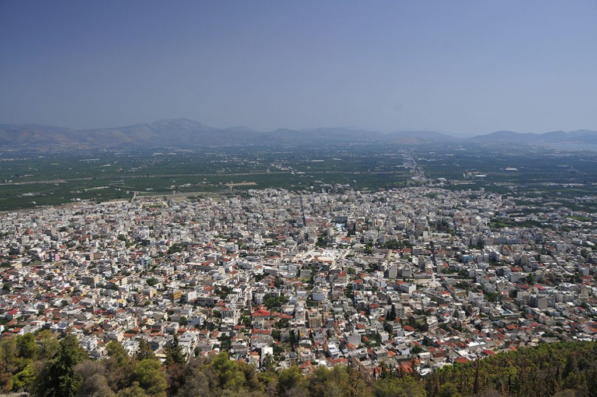

1 Damascus, Syria – 11,000 years old
Also named as the capital of Arab culture, Damascus is the oldest city in the world that has seen many of the great civilizations rise and fall. According to research studies and historical evidence, Damascus was first inhabited in the second half of the seventh millennia B.C. It is the oldest continuously inhabited cities in the world, and is a prominent cultural centre of the Arab world. Today Damascus is a metropolitan area with more than two million population and was named the Arab Capital of Culture in 2008.
2 Aleppo, Syria – 8,000 years old
Aleppo serves as the capital of the Aleppo Governorate, and it has been continuously inhabited for more than 8,000 years. It is a fact that the remnants dating back to 11,000 B.C of human settlements have been found there. Aleppo is actually located between the Mediterranean Sea and Mesopotamia, and due to its geographical location, it became an important trading hub during the ancient era. However, due to warfare between the government and rebel forces that have killed thousands and forced many to flee from their homes, Aleppo has been facing devastation since 2012.
3 Byblos, Lebanon – 7,000 years old
Located around 42 kilometre north of Beirut, Byblos is the oldest and the largest city in the Mount Lebanon Governorate of Lebanon. It is believed to have been first occupied by humans between 8800 and 7000 BC and continuously inhabited since 5000 BC. Also, a UNESCO World Heritage Site, it is believed that the first import of papyrus in Greece took place in this city. This city is also an archaeological wonder because of the successive layers of debris resulting from centuries of human habitation.
4 Argos, Greece – 7,000 years old
Argos is a city in Argolis, the Peloponnese, Greece and is one of the oldest continuously inhabited cities in the world. According to research, Argos remained neutral throughout history, and did not participate in the Greco-Persian Wars. Argos hosts around 22,000 residents today and numerous ancient monuments can be found here.
5 Athens, Greece – 7,000 years old
Athens is the capital and largest city of Greece. It dominates the Attica region with its earliest human presence starting somewhere between the 11th and 7th millennium BC. This city is also an ancient home of philosophy and the birthplace of Western civilisations. In fact it boasts of habitation that goes back long before the days of Socrates, Plato and Aristotle. The city withstood the test of times and was a subject of complete destruction following the Dorian and Persian invasions. Today, Athens is a sprawling metropolis and the oldest capital city in Europe.
work
bro you don't need to work this webpage was made only for giving you ideas about the oldests cities in the world we hope you enjoy it be safe
resume
in order to apply for the job you have to provide us with your resume below and tell us more about yourself
contact
EMAIL CONTACT. SOCLOD16@GMAIL.COM You’ll receive an email with our response. We’ll try to help you as soon as possible!